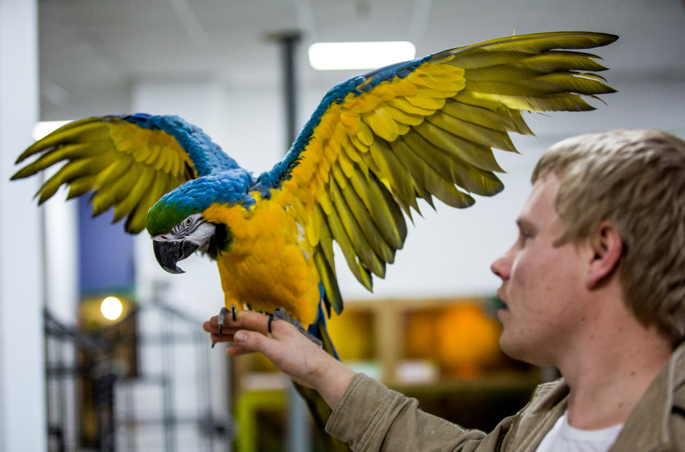

Москва лидирует по посещениям сайта Федеральной информационной системы «НаДальнийВосток.РФ», почти вдвое опережая дальневосточные регионы. Об этом стало известно в ходе круглого стола «Дальневосточный гектар для молодого москвича». Организаторами мероприятия выступили: Министерстве по развитию Дальнего Востока, Агентство по развитию человеческого капитала на Дальнем Востоке (АРЧК), Хабаровское землячество Москвы и Московской области - рассказал Андрей Приданкин.
 Международный фестиваль обжига керамики. Фото: предоставлено пресс-службой правительства Сахалинской области
«Мы отмечаем высочайший интерес к «дальневосточному гектару» среди жителей Московского региона. Москва лидирует по посещениям сайта Федеральной информационной системы «НаДальнийВосток.РФ», почти вдвое опережая дальневосточные регионы. Проведение адресной разъяснительной кампании безусловно позволит перевести потенциальный интерес в реальные заявления на «дальневосточные гектары» и молодые москвичи покорят Дальний Восток», - подчеркнул заместитель генерального директора АРЧК ДВ Денис Кузин.
В ходе дискуссии участники обсудили вопросы организации мероприятий по информированию молодежи о программе «Дальневосточный гектар» и мерах государственной поддержки для граждан, переезжающих на Дальний Восток. Представители землячества предложили рассказывать об уникальных возможностях каждого региона Дальнего Востока студентам вузов Москвы и Московской области в ходе специальных встреч. В них будут принимать участие представители Минвостокразвития России и дальневосточных землячеств, а также эксперты АРЧК.
- Да, вы с Томом на день разминулись, вчера вёз его из Лондона, вот прямо на твоём месте сидел. Очень жаль, что вы, я бы вас познакомил, он отличный парень.
«Закон дает максимальную свободу самореализации граждан. Предложена принципиально новая модель предоставления земельных участков. Выбор деятельности не ограничен. Человек может выращивать клубнику, строить дом, выращивать овощи, заниматься пчеловодством. В дополнение к земельному участку гражданин может получить ту или иную поддержку со стороны государства: поддержку для начала фермерского хозяйства либо подъёмные на переселение, либо льготную ипотеку для строительства своего дома. Все эти меры систематизированы», - отметил Министр Российской Федерации по развитию Дальнего Востока Александр Галушка.
Изучение технологии лучше всего начать с простого урока. На котором изучается как подключить Twitter Bootstrap к своему проекту и вывести с помощью него простейший текст.
«Закон дает максимальную свободу самореализации граждан. Предложена принципиально новая модель предоставления земельных участков. Выбор деятельности не ограничен. Человек может выращивать клубнику, строить дом, выращивать овощи, заниматься пчеловодством. В дополнение к земельному участку гражданин может получить ту или иную поддержку со стороны государства: поддержку для начала фермерского хозяйства либо подъёмные на переселение, либо льготную ипотеку для строительства своего дома. Все эти меры систематизированы», - отметил Министр Российской Федерации по развитию Дальнего Востока Александр Галушка.
Международный фестиваль обжига керамики прошел на Сахалине
Напомним, федеральный закон о «дальневосточном гектаре» вступил в силу с 1 июня 2016 года. На первом этапе земля выделялась лишь в определенных «пилотных» муниципалитетах. С 1 октября 2016 года дальневосточник может получить земельный участок в своем регионе. С 1 февраля 2017 года «дальневосточный гектар» выдается любому жителю России. По последним данным за весь период программы от граждан России поступило свыше 87 тысяч заявок.

Получателям земельных участков по программе «Дальневосточный гектар» доступны государственные меры поддержки среди которых льготное кредитование, гранты для начинающих фермеров и квоты на заготовку древесины для индивидуального жилищного строительства, гранты для начинающих фермеров и квоты.
«Закон дает максимальную свободу самореализации граждан. Предложена принципиально новая модель предоставления земельных участков. Выбор деятельности не ограничен. Человек может выращивать клубнику, строить дом, выращивать овощи, заниматься пчеловодством. В дополнение к земельному участку гражданин может получить ту или иную поддержку со стороны государства: поддержку для начала фермерского хозяйства либо подъёмные на переселение, либо льготную ипотеку для строительства своего дома. Все эти меры систематизированы», - отметил Министр Российской Федерации по развитию Дальнего Востока Александр Галушка.
Напомним, федеральный закон о «дальневосточном гектаре» вступил в силу с 1 июня 2016 года. На первом этапе земля выделялась лишь в определенных «пилотных» муниципалитетах. С 1 октября 2016 года дальневосточник может получить земельный участок в своем регионе. С 1 февраля 2017 года «дальневосточный гектар» выдается любому жителю России. По последним данным за весь период программы от граждан России поступило свыше 87 тысяч заявок.
PDF, 500 КБ
Получателям земельных участков по программе «Дальневосточный гектар» доступны государственные меры поддержки среди которых льготное кредитование, гранты для начинающих фермеров и квоты на заготовку древесины для индивидуального жилищного строительства.
«В реализации этого закона задействованы много различных структур, поэтому все возникающие вопросы мы должны решать во взаимодействии. И если вы понимаете, что есть рисковые вопросы, нельзя допустить, чтобы они превращались в закономерность.


 minvir.ru
minvir.ru
 investvostok.ru
investvostok.ru
 hcfe.ru
hcfe.ru
 erdc.ru
erdc.ru
 fondvostok.ru
fondvostok.ru